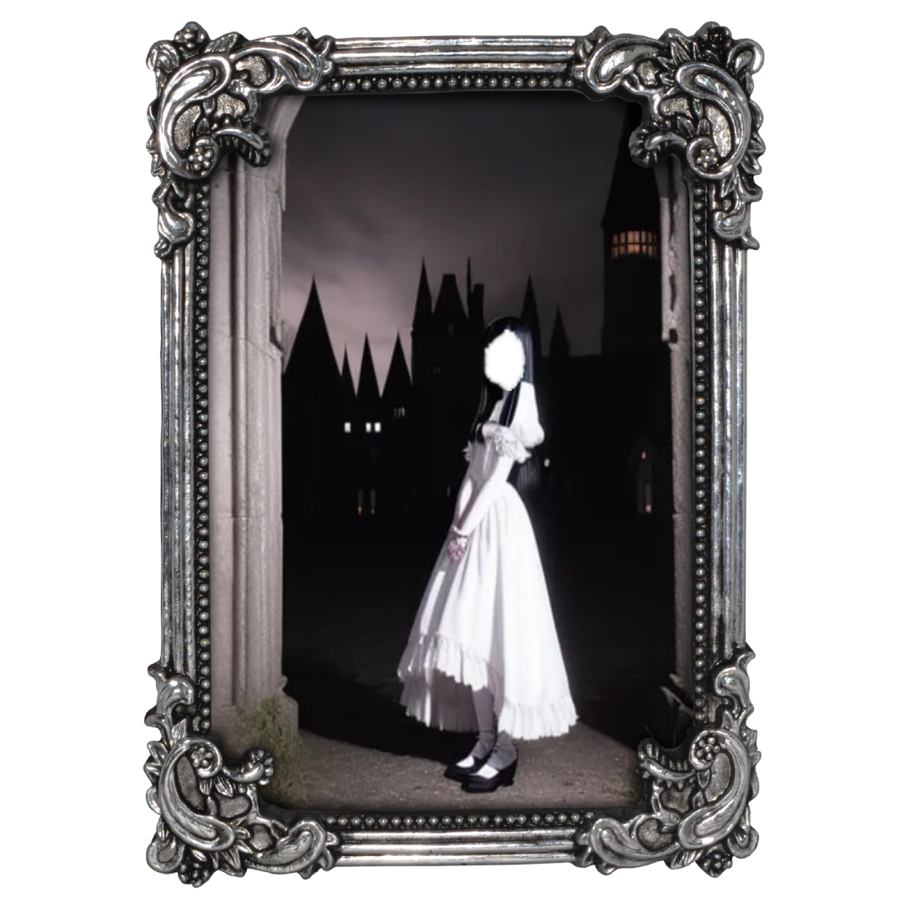

The dollhouse
WsArch - Garry - Paula - Videco - Pearl
Ah, death — the ever-constant handmaiden, is it not?
And here I stand, always watching from just behind the curtain, untouched by the passing of years.
You move about your life, so unaware of the strings that tug you this way and that.
But I see them, those invisible threads guiding your every step, gently manipulated, quietly pulled.
How could you know? You're too busy living, too caught up in the grand performance of it all,
never realizing you're part of a play that's already been written. You dance on your stage,
convinced the choices are yours alone, but from where I stand,
it’s all a familiar act — one I’ve seen many times before.
You see, to me, you’re all marionettes, strung up in the air, going about your days with such seriousness,
such conviction. And I, well, I merely observe, though sometimes I can’t help but give a string a gentle tug,
just to see what happens. Not out of cruelty, no — simply out of curiosity,
a quiet amusement at the way you move through this world, unaware of the forces that shape your every motion.
Life feels so weighty to you, doesn’t it? Each moment seems so crucial, as though it’s all building to something grand.
Yet, from where I stand, the end is always the same. Every string is cut eventually, and the stage grows still.
Ah, but death — that’s where we differ, isn’t it? For while I watch, while I pull the strings
and play my part in this endless scene, you must eventually face the quiet truth: death waits for you.
It matters not how brightly you burn, how valiantly you fight, how carefully you live. The curtain will fall.
Every soul, no matter how glorious or humble, will bow to the same final act. And when your time comes,
when your string is finally snipped, how will you feel? Will you see it coming, or will it catch you by surprise,
as it so often does? You, who walk so confidently through life, unaware that each step takes you closer to the edge.
It’s a curious thing, really — how little you see it, even as it approaches. You spend your days chasing dreams, collecting memories,
all the while the quiet hand of death follows, patient, impartial. Rich or poor, young or old, beloved or forgotten,
the end is the same for all of you. A grim truth, perhaps, but one I’ve watched unfold time and time again.
You may rage against it, or you may welcome it with open arms, but in the end, it will take you just the same.
I must confess, I find it all rather fascinating, this dance you do, so earnest, so desperate to leave your mark,
as if the strings that guide you might somehow lead you somewhere else — somewhere beyond the inevitable end.
But no, they all fall, eventually. And you, like all the others before you, will stand on the same stage, take your final bow,
and slip into the silence that follows.
And still, I watch, with that same quiet smile. For me, there is no end — no final act. I linger here, among you,
always, watching as each of you plays out your role, oblivious to the strings that pull you, to the death that waits.
It saddens me, in a way, to see you live so fiercely, only to be reminded that it all ends in the same quiet darkness.
But it is the way of things, isn’t it? The play must go on, after all, and I, the ever-present observer,
will be here long after you’ve exited the stage.
But for you — your time is coming, as it does for everyone. So live your part, dance your dance, even as the strings grow taut.
When the final cut is made, will you realize that you were never truly in control? Or will you cling to the illusion,
right until the end, believing that you led the way? Either way, my dear, the show will go on. My dear marionettes.
The outsider is nothing more than a fleeting shadow, hardly worthy of a second glance.
They may attempt to insert themselves into the narrative, but their presence is laughably inconsequential.
With their peculiarities and quirks, outsiders fall woefully short of any ideal.
True perfection belongs only to the divine and the cold precision of pure machine code—realms
that will forever elude them.
To rise above the ordinary human experience, one must embrace a detachment from emotional turmoil
and reject the simplistic notions of good and evil. It’s through this cold rebirth
that one transcends the mundane, becoming something greater.
The only individuals of significance are those who have supported your ascent.
They are the ones who truly matter, shaping your journey in meaningful ways.
Construct your life so artfully that those with whom you once exchanged pleasantries will look at you in confusion,
wondering, “Did we ever truly connect?” Let them ponder that; it adds to the intrigue.
While outsiders may try to disrupt your harmony, it’s amusing to remember that they are merely irrelevant.
Their futile attempts to undermine you are little more than a source of entertainment.
So, regard them with a mocking smile; they are nothing
but forgotten toys—insignificant pieces of flesh in a much larger scene. They hold no real importance.
Embrace your inner automaton. Pursue your desires without hesitation, unburdened by the triviality of those
who exist outside your circle. After all, they are just marionettes, dancing to a tune they’ll never comprehend.
Oczy są odbiciem duszy. Moje oczy są puste.
-----BEGIN PGP PUBLIC KEY BLOCK-----
mDMEZwxqehYJKwYBBAHaRw8BAQdA6SB9ohj/2FrfhQoABalw8/XnqE4Psdgz+4Su
LB4fSd60HXBhdWxhIDxwYXVsYWhhaGFoYUBwcm90b24ubWU+iHIEExYIABoECwkI
BwIVCAIWAQIZAQWCZwxqegKeAQKbAwAKCRCkgfPX2Njne595AQDPwATvT/QRkX+a
9waH9tE0+yOoMC6IGf6ZXHxNlDORrgEAlIv6QSJqSjP9knZnqXdzhAuf1BXv29n6
upnwVDCBFwO4OARnDGp6EgorBgEEAZdVAQUBAQdA+qLQASqon4AvsgR5KTKbGPPH
/xVAbOjw7JQ+jZtbFicDAQgHiGEEGBYIAAkFgmcManoCmwwACgkQpIHz19jY53tJ
SwD/eVewQgbk6nGbVtTWJMq8VSwirr/V1ZD4fWLLiBUhnvwA/2YzO4E7AGJO28gS
QX1b8Hhf/D48pMmgRdhACdcUaHMC
=d6fa
-----END PGP PUBLIC KEY BLOCK-----
The dollhouse
WsArch - Garry - Paula - Videco - Pearl